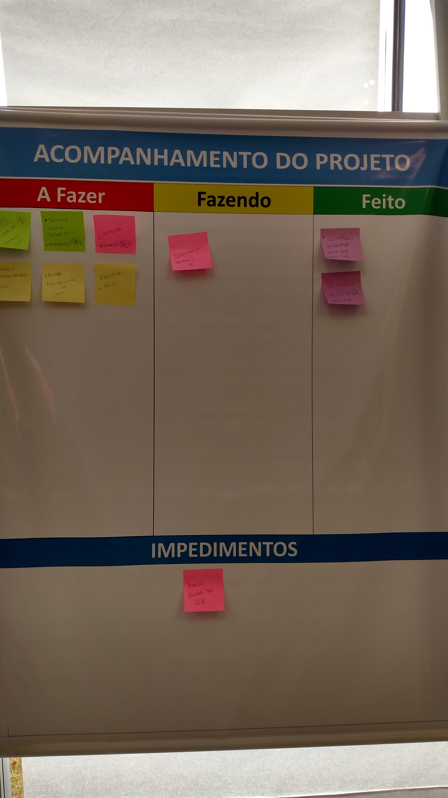

Capacitação em Metodologias Ativas da Universidade de Minho
2016 - fev mar abr-jun jul ago set out nov
nov-2016
< Início da páginaout-2016
< Início da páginaset-2016
< Início da páginaago-2016
< Início da páginajul-2016
Ao final do semestre pude observar os resultados obtidos das disciplinas e comparar com alguns indicadores. Vou tentar separar por disciplina:
ECOI02 - Lógica de Programação
A disciplina tinha XY alunos do curso de Engenharia de Computação do primeiro período
ECO034 - Computação Gráfica e Processamento Digital de Imagens
A disciplina tinha XY alunos do curso de Engenharia de Computação do nono período
ECO044 - Programação de Dispositivos Móveis
A disciplina tinha XY alunos do curso de Engenharia de Computação e três alunos do curso de Engenharia de Controle e Automação
< Início da páginaabr-mai-jun-2016
Em conversas com o setor de Comunicação da UNIFEI - Itabira decidi pelo desenvolvimento de um aplicativo de comunicação da UNIFEI para alunos, docentes e servidores. Esse aplicativo deveria contemplar as opções:
- Eventos
- Avisos
- Cardápio do restaurante
- Promoções da lanchonete
- Horários de ônibus
- Ramais da UNIFEI
- Mapa das salas da UNIFEI
- Calendário acadêmico
Durante a disciplina ECO044 no mês de março e abril fiz uma apresentação breve da metodologia de desenvolvimento ágil Scrum e do desenvolvimento de aplicativos para Android e iOS. Essas apresentações ficaram disponíveis para os alunos durante todo o semestre. Além disso, também foram repassados as equipes materiais digitais como livros e códigos-exemplo de aplicativos para os sistemas operacionais móveis.
Na disciplina ECO044 usei Mapa Mental, $1 Prototype e o Scrum para fazer o acompanhamento dos aplicativos para Android e iOS. A cada Sprint cumprido, os alunos apresentavam o que foi definido no Sprint e o que conseguiram realizar no desenvolvimento dos aplicativos. Pela maioria não ter conhecimento de desenvolvimento de aplicativos, decidiram por dividir a equipe em dois grupos distintos: um para desenvolvimento Android e o outro para iOS. Isso provocou um comportamento inesperado do uso do Scrum, pois os grupos tinham as mesmas User Stories, porém as tarefas eram diferentes. O $1 Prototype desenvolvido por Greg Nudelman e descrito no livro Android Design Patterns serviu para desenvolver protótipos rápidos de interface do aplicativo usando papéis Post-it. Para mostrar a efetividade deste tipo de prototipagem rápida foi desenvolvido um texto sobre o Restaurante CQCome e os protótipos em papel podem ser visualizados no arquivo Fotos-CQCome.zip.
Utilizei a avaliação por pares para avaliar os membros de cada equipe durante o semestre na disciplina. Tive três equipes com 6 a 7 integrantes por equipe e todas teriam que desenvolver aplicativos para Android e iOS. Criei um formulário para que todos pudessem submeter as avaliações de cada membro da equipe.
- Avaliação por pares da equipe LarissaManda;
- Avaliação por pares da equipe SprintWaifu;
- Avaliação por pares da equipe Tcha-kanban;
Fiz todos as somatórias conforme o material da Diana e do Rui, porém não mostrei aos membros de cada equipe as notas obtidas. Fiquei com receio de provocar discussões desnecessárias. As notas obtidas nas avaliações por pares eram contabilizadas na nota final do bimestre, constituindo juntamente as avaliações dos Sprints e do acompanhamento das equipes pelo docente.
Também ministrei aulas nas disciplinas de ECO034 - Computação Gráfica e Processamento Digital de Imagens e ECOI02 - Lógica de Programação.
Na disciplina ECO034 que tem uma carga-horária de 64h (4 aulas teóricas), dividi em 2h em sala e 2h em laboratório para desenvolvimento de pequenos roteiros usando o ambiente de desenvolvimento Processing. A escolha por esse ambiente foi motivado pela simplicidade de utilizar métodos gráficos em uma linguagem Java-like. Além de desenvolverem projetos envolvendo conceitos da ementa da disciplina.
Na disciplina ECOI02 que possui 2h em laboratório foram desenvolvidos alguns textos preparatórios para a prova bimestral da disciplina. Os textos preparatórios possuíam níveis diferenciados de dificuldade para implementação de programas em C/C++. A ideia é que os alunos pudessem ver as suas próprias dificuldades e perguntar ao docente quando necessário.
< Início da páginamar-2016
No dia 02/03 ministrei a primeira aula de ECO044 – Programação de Dispositivos Móveis no curso de Engenharia da Computação e além de apresentar o plano de ensino da disciplina, realizei uma atividade para “quebrar o gelo” entre os alunos e o professor. Pedi para os alunos fazerem um mapa mental sobre o ChurrECO (Churrasco da Engenharia de Computação) que é uma confraternização anual entre os alunos veteranos e ingressantes (bixos) do curso.

Depois de elaborar o mapa mental pedi para descrever os responsáveis e as tarefas a serem realizadas em um quadro Kanban. Com o quadro Kanban e o mapa mental foi pedido aos alunos elaborarem um aplicativo que pudesse manter as informações do churrECO entre todos os envolvidos (stakeholders).
Todo esse processo foi acompanhado e algumas dúvidas foram elucidadas à medida que eles tinham. Devo salientar que vários detalhes foram omitidos, mas o propósito era permitir que os alunos tomassem “conta do espaço” e sentissem que o desenvolvimento do aplicativo era deles.
< Início da páginafev-2016
Nos dias 22 à 26/2/2016 aconteceu na UNIFEI Campus Itabira, o primeiro Workshop do Programa de Capacitação de Metodologias Ativas no Ensino Superior realizado pela parceria entre a UNIFEI e a Universidade de Minho (UMinho) de Portugal.
Antes da realização do Workshop eu estava um pouco ansioso se os conteúdos seriam diferenciados daqueles vistos no II STHEM que aconteceu em Lorena-SP no ano de 2015. Eu esperava por um conteúdo já conhecido e com poucas experiências reais em cursos de Engenharia. Porém, desde o início a profa. Diana e o prof. Rui já introduziram uma forma diferenciada de PBL (Problem Based Learning) que eu conhecia de algumas referências. Não somente pela aplicação, mas a forma de abordar e observar a aplicação do PBL junto ao corpo discente da UMinho.
No segundo dia fui integrado a um grupo de docentes da UNIFEI que tinha, segundo os professores, a tarefa de imaginar alguns problemas (50 ou mais) que poderiam se tornar um único, segundo uma metodologia decrescente 5-3-2-1. O meu grupo por ser composto de docentes de Engenharia Ambiental, Engenharia de Mobilidade, Engenharia de Controle e Automação, Engenharia de Materiais e Engenharia de Computação tinha uma séria dificuldade de encontrar um tema comum. No final, decidimos por focar em uma tema de Engenharia Ambiental que pudesse ser auxiliada pelos demais docentes em cada uma das disciplinas de seus cursos.
Devo confessar que me senti um “pouco perdido”, pois diferentemente de pensar em um bloco de disciplinas do curso de Engenharia de Computação, tive que expandir minha percepção e diminuir meus receios quanto ao problema que decidimos explorar. Depois dessa etapa tivemos que pensar sobre a forma de avaliação da aprendizagem dos discentes quanto a resolução do problema que seria proposto pelo nosso grupo. Também devo salientar que a avaliação é uma grande dificuldade, pois ao meu ver, avaliar somente escrita e apresentação seria insuficiente.
A avaliação por pares que eu vi no workshop foi um ótimo parâmetro para adicionar na avaliação da aprendizagem dos discentes no projeto. Apesar que eu já fazia uma avaliação “subjetiva” utilizando um formulário da Aprendizagem Baseada em Equipe (Team Based Learning – TBL) que gostei no curso do STHEM e utilizei na disciplina de ECO044 – Programação de Dispositivos Móveis. Na apresentação, no último dia, eu estava um pouco inseguro pois tinha algumas dúvidas quanto ao conteúdo da apresentação que foram resolvidas observando as apresentações dos grupos anteriores.
Ao término da apresentação do meu grupo, os professores da UMinho fizeram um balanço geral das apresentações apontando falhas e eventuais melhorias. Depois que o Workshop terminou, percebi que preciso me dedicar a aprender mais sobre o PBL e suas formas de avaliação, pois ainda tenho dúvidas. O único impedimento é conciliar as atividades da UNIFEI com a leitura de materiais complementares, pois está faltando tempo.
< Início da página